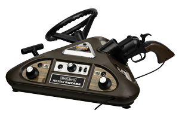

Er is online een grote discussie over wanneer de eerste generatie videogames begon en eindigde. In 1972 werd de eerste videogameconsole verkocht voor thuis, terwijl er al in 1968 aan dit project werd gewerkt. Volgens sommigen eindigde de generatie in 1977 door de videogamecrash van 1977, terwijl anderen denken dat de eerste generatie pas in 1983 eindigde met de Compu-vision. De bekendste eerste generatie consoles zijn onder andere de Color Tv-Game, Ping-O-Tronic en de Odyssey.
| Naam | Maker | Prijs (omgerekend 2019) | Release datum | Aantal verkocht |
|---|---|---|---|---|
| Magnavox Odyssey | Magnavox | €534 | NA: 1972 EU: 1973 JP: 1974 |
330.000 |
| Magnavox Odyssey series (11 consoles) | Magnavox, Phillips | €415 - €955 | NA: 1975-1978 | Niet bekend |
| TV Tennis Electrotennis | Epoch Co. | €312 | JP: 1975 | 10.000 |
| Home Pong | Atari, Sears Tele-Games | €411 | NA: 1975 | 150.000 |
| Binatone TV Master | Binatone | €310 | UK: 1976 NA: 1976 |
Niet bekend |
| Telstar series (14 modellen) | Coleco | €196 | NA: 1976-1978 | 1 miljoen |
| Color TV-Game series (5 consoles) | Nintendo | €109 - €633 | JP: 1977-1980 | 3 miljoen |
De Magnavox Odyssey is de eerste commerciële video game console voor thuisgebruik. Hij werd in 1972 in Noord-Amerika uitgebracht, in 1973 in de UK en in Europa, en in 1974 in Japan. De Odyssey bestond uit een witte, zwarte en bruine doos die aangesloten werd op een televisie en twee rechthoekige controllers die met kabels waren bevestigd aan de console. De console gaf 3 vierkante stippen op het scherm weer in zwart-wit, waarbij het gedrag van de stippen veranderde op basis van het spel dat werd gespeeld. Zo kon men bijvoorbeeld pingpong er mee spelen. Er werd ook een perifere controller verkocht waarmee men kon schieten. Dit is de eerste lichtpistool dat ontwikkeld werd voor videogames. Uiteindelijk werden er maar zo'n 330.000 consoles verkocht, wat vooral kwam door een slechte marketing. Mensen dachten dat de console enkel kon gebruikt worden in combinatie met een Magnavox tv, en kochten het daardoor niet. Het grootste commerciële succes van de Odyssey kwam uiteindelijk door rechtzaken over misbruik van het patent, waardoor ze meer dan 100 miljoen dollar verdienden over de komende 20 jaar. In 1975 werd de console van de markt gehaald.
De Magnavox Odyssey series zijn 11 consoles die uitgebracht zijjn tussen 1972 en 1978. Deze bevatten de Odyssey 100, Odyssey 200, Odyssey 300, Odyssey 400, Odyssey 500, Odyssey 2000, Odyssey 3000, Odyssey 4000, Phillips Odyssey 200, Phillips Odyssey 2001 en de Phillips Odyssey 2100. De eerste 8 consoles zijn uitgebracht in Noord-Amerika, en de laatste 3 consoles zijn uitgebracht in Europa. De eerste console is de Odyssey 100 dedicated console, die de simpelste van de serie was. Men kon er enkel hockey of tennis mee spelen. Daarna werd de Odyssey 200 dedicated console uitgebracht in 1975. Hierbij werd een derde game toegevoegd: Smash, en kon men kiezen of men met 2 of 4 personen wou spelen. Dit was de eerste console waarbij dat mogelijk was. Alle opvolgende modellen waren complexer, en men kon er meer spellen mee spelen. Bij de 3000 en de 4000 kon men zelfs de moeilijkheidsgraad kiezen. Ook konden bij de 4000 de controllers van de console worden genomen, en was het mogelijk om kleuren te tonen in plaats van zwart-wit. De laatste Odyssey van de series werd in 1978 op de markt gebracht in Europa.
De Electrotennis is de eerste console die door een Japans bedrijf werd gemaakt, namelijk door Epoch in 1975. Het speciale aan deze console, was dat hij niet aangesloten hoefde te zijn aan de tv, noch aan een stekker. De console kon namelijk zijn eigen analoge signaal uitzenden via radiogolven, en er konden batterijen in. Wat ook speciaal was aan deze console, was dat je alleen of met zijn tweeën kon spelen. A.I. was nog niet erg ver in de jaren 70, en normaal werden dan ook enkel multi-player games gemaakt, zodat je tegen elkaar moest spelen. Daarnaast kon men het ping-pong batje zowel naar voren als achteren, en naar boven als naar beneden bewegen. Dit was voor de creatie van deze console ook niet mogelijk.
In 1974 werd het idee van Home Pong gecreëerd door Atari na het enorme succes van Pong. In 1975 wilden ze met het product op de markt gaan, maar door gebrek aan interesse was dit in eerste instantie geen succes. Daarna probeerden ze het via een sport-catalogus Sears Sporting Goods, waarin Magnavox ook eerder had geadverteerd. Hiermee hadden ze groter succes en er werd een exclusieve deal getekend voor 150.000 eenheden voor de kerstmis. Aangezien Atari hier de mogelijkheden niet toe had, heeft het een nieuwe fabriek op laten zetten, waardoor het deze aantallen wel kon maken. Later werd de Home Pong onder Atari's eigen naam uitgebracht. Atari's Pong had een groot voordeel ten op zichte van Magnavox's Odyssey: de graphics waren met kleuren in plaats van zwart-wit, een score teller en hij had betere geluidseffecten. Hierdoor verkocht de Pong beter dan de Odyssey in zijn eerste jaar. In het begin van de jaren 80 werd de console van de markt gehaald, na tegenvallende cijfers ten gevolge van de video game markt crash.
De Binatone TV Master console is in 1976 in het Verenigd Koninkrijk en Noord-Amerika op de markt gebracht door het Britse bedrijf Binatone. Net zoals veel consoles van die tijd, kon men er pong op spelen met een zwart-wit tv. Daarnaast kon men ook tennis, voetbal en squash spelen. Latere versies zoals de Binatone Master MK IV ondersteunden kleuren-tv's. Deze versie kostte maar 13 pond in 1977, wat momenteel zo'n €115 zou zijn. Ook was deze veel populairder dan de originele Binatone TV Master console. Zeer handig aan deze versie was dat men kon kiezen of je een power-adapter gebruikte, of batterijen.

In 1976 werd door Coleco een series videogameconsoles uitgebracht, genaamd Telstar. De eerste Telstar console was de Telstar, die 2 controllers had met een grote draaiknop in het midden waarmee je de batjes moest besturen. De games die erbij verkocht waren, waren uiteraard pong-gerelateerde games. Zo kon men hockey, handbal en tennis spelen. De opvolgende consoles zagen er ofwel iets luxer uit, of hadden extra games. Zo had de Tesla Ranger maar liefst 6 spellen, waarbij men jai alai, target (schietspel) en kleiduivenschieten ook kon spelen. Hierbij werden speciale lichtpistolen verkocht om deze spellen te spelen. Een aantal consoles gingen echter de ganse andere kant op met spellen, en bij de Telstar Combat! kon men dan ook 4 vechtspellen spelen, waarbij men 2 controllers per persoon gebruikte. De Telstar Arcade had een driehoekige console, met aan 1 kant een stuur met versnellingspook, aan 1 kant de batjes en aan 1 kant het lichtpistool. Hierop kon men meer dan 40 verschillende spellen spelen. De foto hier rechts is een foto van de Telstar Arcade. 1 Miljoen eenheden zijn verkocht voordat de Telstar van de markt ging in 1978. Door de crash van de video game markt, moest Coleco in 1980 zelfs bijna falissement aanvragen.
De laatste consoles series die in de eerste generatie werd uitgebracht, zijn de Nintendo Color TV-Game series. De eerste van deze series werd in 1977 uitgebracht, en noemde de Color TV-Game 6. Waarbij 6 stond voor het aantal variaties op pong-games dat de console ondersteunde. Men kon er tennis, hockey en volleybal mee spelen, met een speler of met twee spelers. De andere series waren de Color TV-Game 15, Color TV-Game Racing 112, Color TV-Game Block Breaker en de Computer TV-Game. Van de 6 en de 15 werden er beide elk 1 miljoen consoles verkocht, en van de racing 112 en de block breaker elk 0.5 miljoen consoles. Bij de racing 112 werd er een stuur met versnellingspook verkocht, of men kon deze met kleine controllers in multiplayer spelen. De Computer TV-Game was dan weer meer een arcade systeem. Hierop kon het bekende spel Computer Othello worden gespeeld, maar doordat er een compleet arcade bord in de console zat, was het erg lomp en zwaar. Hierdoor heeft het nooit een groot succes gekend. In 1980 werden de Color TV-Game series van de markt gehaald.